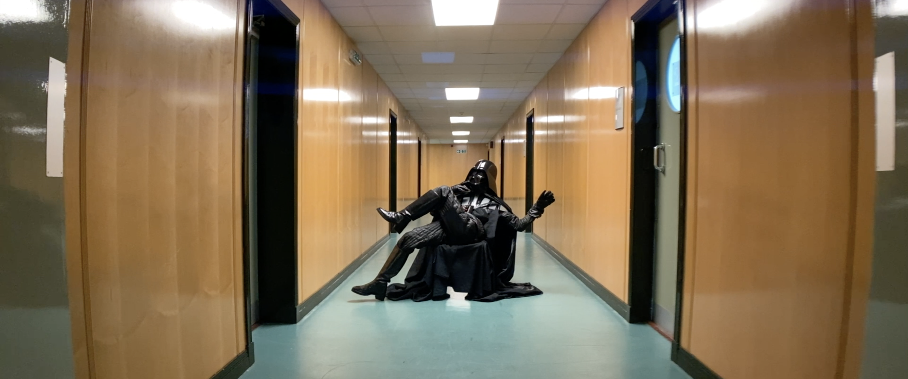
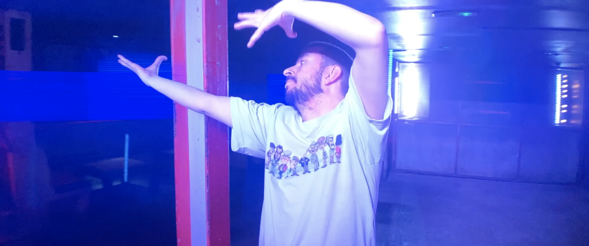
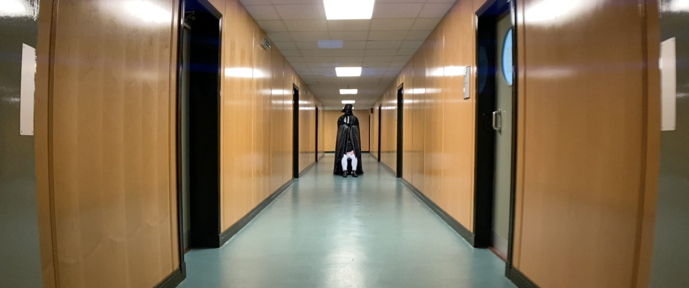

NTS & 21COMMON


NON-OPTIMUM: WHEN IT'S SAFE TO DO SO
NON-OPTIMUM: WHEN IT'S SAFE TO DO SO is a film exploring the care systems response during the COVID-19 lockdown for those who were dependent on it. Using popular iconography and autobiography of the collaborators to bring it to life, NON-OPTIMUM offers an insight into that time.
Created with The National Theatre of Scotland and 21COMMON, Dan worked as Video Artist on the film.
For more Info: 21common.org/non-optimum



Images by Dan Brown